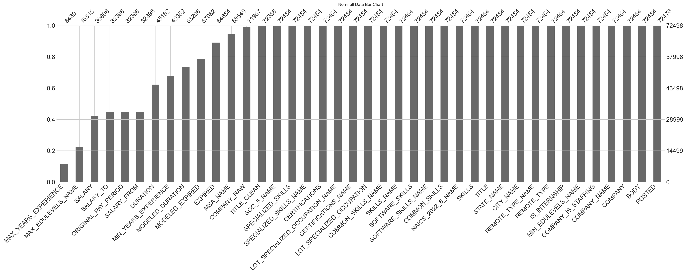

Column Missing %
MAX_YEARS_EXPERIENCE 88.372093
MAX_EDULEVELS_NAME 77.495931
SALARY 57.505035
SALARY_TO 55.311871
ORIGINAL_PAY_PERIOD 55.311871
SALARY_FROM 55.311871
DURATION 37.678281
MIN_YEARS_EXPERIENCE 31.926398
MODELED_DURATION 26.607631
MODELED_EXPIRED 21.264035
EXPIRED 10.819609
MSA_NAME 5.447047
COMPANY_RAW 0.746227
TITLE_CLEAN 0.193109
SOC_5_NAME 0.060691
SPECIALIZED_SKILLS 0.060691
SPECIALIZED_SKILLS_NAME 0.060691
CERTIFICATIONS 0.060691
LOT_SPECIALIZED_OCCUPATION_NAME 0.060691
CERTIFICATIONS_NAME 0.060691
LOT_SPECIALIZED_OCCUPATION 0.060691
COMMON_SKILLS_NAME 0.060691
SKILLS_NAME 0.060691
SOFTWARE_SKILLS 0.060691
SOFTWARE_SKILLS_NAME 0.060691
COMMON_SKILLS 0.060691
NAICS_2022_6_NAME 0.060691
SKILLS 0.060691
TITLE 0.060691
STATE_NAME 0.060691
CITY_NAME 0.060691
REMOTE_TYPE_NAME 0.060691
REMOTE_TYPE 0.060691
IS_INTERNSHIP 0.060691
MIN_EDULEVELS_NAME 0.060691
COMPANY_IS_STAFFING 0.060691
COMPANY_NAME 0.060691
COMPANY 0.060691
BODY 0.060691
POSTED 0.030346Conclusion
Understanding Job Market Trends in 2024
0.1 Introduction & Research Rationale
The job market in 2024 is undergoing a major transformation with the rise of artificial intelligence and widespread acceptance of long-distance/remote work. This analysis will examine the following key topics to uncover the factors that influence salary trends:
The restructuring of compensation due to AI, inflation, and remote work.
The traditional pay structure is being reshaped as companies adapt to automation, rising costs of living, and a distributed workforce. These forces are pushing employers to rethink how they reward skills, experience, and location.
Growing pay disparities across regions, industries, and job types in 2024.
High-paying jobs are increasingly concentrated in specific tech-driven sectors and urban hubs. Meanwhile, many essential or service-based roles are seeing slower wage growth, deepening inequality across the workforce.
Shifting salary patterns based on remote flexibility, job type, and sector growth.
Remote roles now often offer comparable or even higher compensation due to talent shortages and broader applicant pools. Industries like tech and healthcare are setting new standards, while others struggle to keep pace.
0.2 Literature Review Summary
The rise of Artificial Intelligence (AI) has reshaped the job market across the US, with demand for AI-related skills increasing dramatically. According to a study by PWC, jobs that require AI specialist skills are growing 3.5 times faster than all other job markets, with skilled AI workers being paid up to 25% more in some sectors (PwC (2024)). However, this increase in compensation is not limited to workers specialized in AI. Non-AI roles that require complementary skills such as digital literacy, analytical thinking, and teamwork are also seeing a 5–10% wage increase (Mäkelä and Stephany (2024)). According to US job vacancy data from 2018–2024, AI-related jobs are significantly more likely to include non-monetary benefits as part of the compensation package, including parental leave and remote working options (Stephany, Mira, and Bone (2025)).
Beyond the benefit of not having to commute and the ability to work from anywhere, long-distance and remote roles are often sought after by job seekers due to faster wage growth. In a study comparing the pay trends of remote versus in-office workers in the same occupation, remote workers experienced 4.4% faster annual wage growth, especially in professional and technical sectors (Pabilonia and Vernon (2025)). Furthermore, workers who transitioned into remote roles with the same employer saw up to 16 percentage points higher wage growth than their counterparts who remained local (Romem (2024)). This demonstrates that switching into remote work can lead to significantly higher wage growth, even within the same company and/or job category.
0.3 References
title: “Data Cleaning & Exploration” execute: kernel: ad688-venv echo: false
warning: false
message: false
author:
- name: Angelina McKim affiliations: - id: bu name: Boston University city: Boston state: MA - name: Devin Blanchard affiliations: - ref: bu - name: Leo Liu affiliations: - ref: bu date: 2025-09-10 date-modified: 2025-10-10 bibliography: references.bib csl: csl/econometrica.csl format: html: toc: true number-sections: true df-print: paged —
1 Methodology
Below are the steps we took to prepare the dataset to ensure accuracy and statistical integrity in our exploratory data analysis (EDA).
1.1 Remove Unnecessary Columns
Firstly, columns containing redundant and irrelevant information were excluded from the dataset. Since the scope of this analysis is focused on job market trends in 2024, it is best practice to remove any outdated NAICS/SOC fields to prevent confusion and duplication. Similarly, metadata fields or duplicate fields that could introduce ambiguity and do not add any meaningful to downstream analysis are excluded. To summarize, unnecessary columns containing the following information were dropped:
- Meta/tracking
- Duplicated location info
- Raw/duplicate title & body
- Duplicated employment info
- Education code columns
- Redundant NAICS/SOC versions
- LOT/V6 occupation hierarchy
- ONET & CIP codes
- Sectors
1.2 Handling of missing values
We addressed missing values based on field type and the amount of data missing per field:
1.2.1 Numerical Fields
Missing values in key numerical fields were imputed with the median of each respective fields. Since these numerical fields are key for grouping and visualizing trends, simply removing empty rows could reduce the diversity of the dataset and introduce biases. The rationale for imputing the median rather than the mean is that the latter tends to be influenced by outliers and skewed distributions, which is often exhibited in fields like “SALARY. Based on the downstream EDA, additional filtering may be applied to exclude imputed values altogether to prevent distorition and ensure statistical integrity in the trends observed.
1.2.2 Categorical Fields
Missing values in key categorical fields were imputed with the placeholder value “Unknown” in order to prevent those rows of data being dropped, leading to unnecessary data loss. By imputing a neutral label like “Unknown”, this strategy ensures that data integrity is retained without introducing false assumptions and biases into the downstream analysis.
1.2.3 Columns containing Majority Missing Data
While the above addressed the rationale for imputing missing values, having to impute the majority of a column’s values can also create noise, which provides insignificant information and analytical value to the downstream analysis. Therefore, columns containing more than 50% missing values were excluded from the dataset.

1.3 Remove Duplicates
To eliminate true duplicates from the dataset, job listings that have identical values in all the fields listed below were removed to prevent distortion and ensure statistical integrity:
- Job Title
- Company Name
- Location
- Posting Date
- Skill requirements
- Employment type
(55656, 33)References
Mäkelä, E., and F. Stephany. (2024): “Complement or substitute? How AI increases the demand for human skills,” arXiv preprint arXiv:2412.19754,.
Pabilonia, S. W., and V. Vernon. (2025): “Remote work, wages, and hours worked in the united states,” SSRN Electronic Journal,.
PwC. (2024): “PwC 2024 Global AI Jobs Barometer: Demand, Wages, and Disruption,”
Romem, I. (2024): “Long-Distance Work and Compensation,”ADP Research Institute.
Stephany, F., A. Mira, and M. Bone. (2025): “Beyond pay: AI skills reward more job benefits,” arXiv preprint arXiv:2507.20410,.